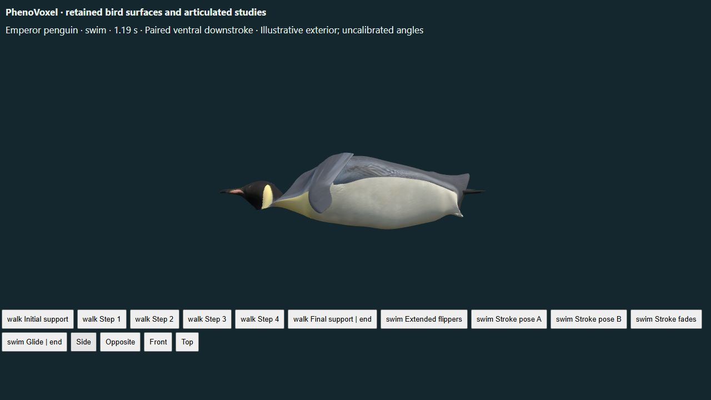

Interactive emperor penguin | Bird playback controls
The retained artist exterior has smoother shoulder attachment weights, with rigid distal flipper anchors. Original positions, normals, UVs, embedded images, morph targets and animation curves are retained. This reduces pinching during the existing paired-flipper study. Residual shoulder/body contour and foot/neck swimming-morph limitations remain; this is not anatomical or physiological validation.
Sharp neighboring skin-weight changes had stretched some shoulder edges by about 11.6 times their original length in a sampled swimming pose. Smoothing the attachment field while fixing distal flipper anchors reduces the sampled full-cycle shoulder maximum to below 4 times. These are graphics diagnostics, not estimates of biological skin strain or acceptable tissue mechanics.

Sato et al. 2010 provide the existing 1.47 Hz active-cycle reference from nine free-ranging emperor penguins. van Dam et al. 2002 provide stroke/glide context. Joint amplitudes, playback duration, source morphology and attachment weights remain authored and uncalibrated. No force, energy, oxygen or complete dive model is implemented.
The separately versioned derivative retains the original Marcel Porsiel images, UVs, geometry and animation curves under CC BY-NC 4.0. The original archive asset remains intact. Tests compare source attributes, texture bytes, rigid distal anchors, material seams, all five pose bounds, reverse seeking and downloadable clip correspondence. The Khronos validator checks file conformance, not anatomy.
Still incomplete: the artist-derived swimming silhouette and foot/neck morph need further correction. The remaining contour is visible in these renders. Improved attachment continuity does not make the full model physiologically accurate. 186 unavailable processes remain across the archive.